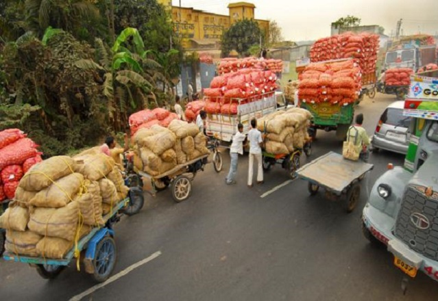

Grain Marketing
Grain marketing in our modern society is how farmers sell what they grow, and it allows them to sell on a large scale. Customers may include everyone from ranchers who need feed for their livestock to ethanol factories. Seven grains and grain derivatives trade on the Chicago Board of Trade (CBOT)
Read More
Feed Solutions
What do we mean with Feed solutions? A balanced use of resources in the total animal chain (i.e. from sourcing raw materials right through to meat, dairy and eggs) is what we mean with Feed solutions, one of the three central themes of Going Circular. A good example is to improve longevity of dairy cows via sound nutrition and feeding advice.
Read More
Risk Management
Ways to Reduce Your Liability Minimize or eliminate dangerous situations. This might include: aggressive animals, manure pits, moving vehicles or... Bio-security is recommended. Provide booties and hand wipes for visitors who enter barn areas. When selling or serving foods, make sure all regulations ...
Read More
Advisory Services
Vestibulum ante ipsum primis in faucibus orci luctus et ultrices posuere cubilia Curae; Nulla mollis dapibus
Read More
Grain Contracts
Typically, farmers will “sell ahead.” This means the farmer enters into a grain contract to deliver a certain amount of crop during a certain time frame. The rules governing these grain contracts are very technical and complex.
Read More

Farm Supplies
Mechanical Structures and devices that are used in farming or other agriculture are known as Farm Equipment. Hand tools and power tools to tractors are some of the types of such equipment used in farms. Also, there are many types of equipment that are operated and towed on the farm.
Read More